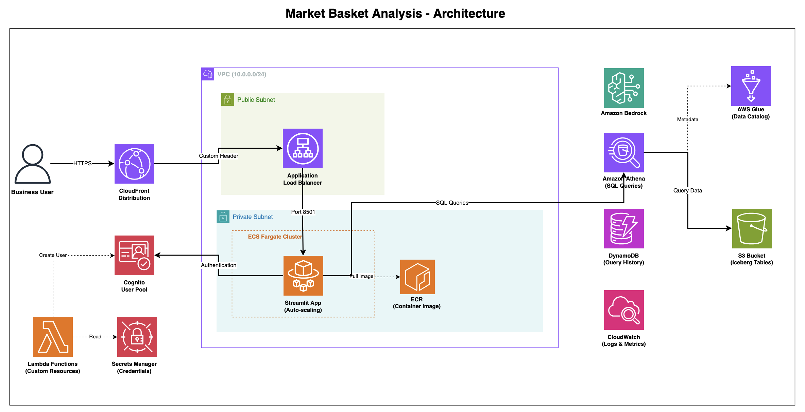

← Back to Portfolio
⚡Executive Summary
Market Basket Analysis transformed enterprise e-commerce analytics from a SQL-gated, weeks-long process into an AI-powered conversational platform. Serving merchandising, finance, and marketing teams, it delivered $4.8M+ in annual value through optimized bundling, margin expansion, and reduced returns. accelerating decision-making by 10x while freeing data teams from repetitive query work.
📋Situation
The Core Problem
Analytics Access Bottleneck: 200+ SQL requests backlogged for months forced 150+ business users to wait 2–3 weeks for answers, directly delaying pricing, merchandising, and promotion decisions. Data engineers spent 60% of their time writing repetitive queries instead of building strategic capabilities.
Business Impact
- Revenue Leakage: Merchandising teams couldn't identify high-value product combinations fast enough to capitalize on seasonal trends
- Margin Erosion: Finance lacked real-time visibility into basket margins, leading to pricing decisions that eroded profitability
- Cost Waste: Operations couldn't analyze return patterns quickly enough to drive quality improvements and reduce reverse logistics costs
- Marketing Inefficiency: Promotion effectiveness analysis took weeks, leading to continued investment in low-ROI campaigns
- Knowledge Silos: Only 5–10 people understood the complex data model spanning products, orders, customers, returns, and promotions
Scale of Impact: Organizations were spending millions on data infrastructure but couldn't answer basic business questions in time to act. Market basket analysis. understanding what products customers buy together. took weeks instead of minutes, directly impacting revenue, margins, and customer satisfaction.
🎯Task
The Challenge: Democratizing E-Commerce Analytics at Enterprise Scale
The core challenge wasn't building a chatbot. it was solving an organizational data access problem that was costing millions in lost revenue, margin erosion, and operational inefficiency. Success required:
- Revenue Impact: Enable merchandising teams to identify and act on high-value product combinations. capturing seasonal opportunities and customer preferences before competitors
- Margin Optimization: Provide finance teams with real-time visibility into product and basket margins to guide pricing decisions that expand profitability instead of eroding it
- Cost Reduction: Empower operations teams to analyze return patterns and drive quality improvements that reduce reverse logistics costs and customer dissatisfaction
- Marketing Efficiency: Enable marketing teams to rapidly assess promotion effectiveness and reallocate budget from low-ROI campaigns to high-performing strategies
- Self-Service at Scale: Transform 150+ business analysts, merchandisers, and category managers from data requesters into data explorers. eliminating the 200+ request backlog
- Data Team Liberation: Free data engineering teams from repetitive SQL writing to focus on strategic capabilities that drive long-term competitive advantage
The Strategic Imperative: This wasn't about replacing SQL. it was about transforming analytics from a specialized, bottlenecked process into a self-service business capability. Success meant enabling every business team to answer their own questions in real-time, fundamentally changing how the organization leveraged data for competitive advantage. The solution needed to deliver measurable business value: increased revenue, expanded margins, reduced costs, and accelerated decision-making.
⚙️Action
The Solution Approach
Market Basket Analysis was built as a conversational AI platform that transformed how business teams accessed e-commerce insights:

Key Solution Components
- Conversational Interface: Business users ask questions in plain English about products, customers, margins, returns, and promotions. no SQL knowledge required
- AI-Powered Analysis: Advanced AI understands business context, explores data relationships, and generates optimized queries automatically
- Comprehensive Data Model: Unified view combining products, orders, customers, returns, promotions, and calculated metrics (margins, costs, profitability)
- Real-Time Insights: Instant query execution with streaming results. users see SQL generation and insights as they're created
- Explainable Results: AI explains methodology, assumptions, and limitations. building trust and enabling learning
- Audit & Compliance: Complete history of all questions, queries, and results for reproducibility and governance
- Self-Service Access: Secure authentication with auto-scaling infrastructure supporting hundreds of concurrent users
Key Business Capabilities Enabled
- Product Affinity & Bundling Optimization: $2.4M revenue impact from strategic product combinations and placement
- Margin & Pricing Optimization: 18% basket margin improvement through real-time profitability visibility
- Return Pattern Analysis: $850K cost savings from targeted quality improvements and reduced reverse logistics
- Customer Behavior & Segmentation: 28% repeat purchase lift through personalized journeys and product recommendations
- Promotion Effectiveness & ROI: $1.2M budget reallocation from low-performing to high-ROI campaigns
Technology Stack
Amazon Bedrock
Claude 3.5 Sonnet
Amazon Athena
Apache Iceberg
Amazon ECS Fargate
Amazon CloudFront
Amazon DynamoDB
AWS Glue Data Catalog
Amazon S3
AWS Cognito
Streamlit (Python)
Why This Was Hard
- Complex Enterprise Data Model: Unified products, orders, customers, returns, promotions, and calculated margins across disparate systems while maintaining query performance
- AI Flexibility vs Governance: Balanced conversational exploration with audit trails, compliance requirements, and financial reporting accuracy
- Trust from Finance & Compliance: Gained confidence in AI-generated insights for pricing and margin decisions affecting millions in revenue
- Scale Without Degradation: Designed for 150+ concurrent business users with sub-5-minute response times on complex analytical queries
Principal-Level Decisions
Decision: Conversational Analytics over Semantic BI Layer
Rejected: Pre-built dashboards + metric layer (Looker/Tableau approach)
Reason: Exploratory workflows required iterative questioning. dashboards would reintroduce the backlog problem. Business users needed to ask "why" and drill deeper without waiting for new reports.
Tradeoff: Less standardized metrics early, mitigated via audit trails and SQL transparency that enabled governance review.
Decision: Show Generated SQL to All Users
Rejected: Black-box AI with results-only interface
Reason: Finance and compliance teams wouldn't trust AI-generated insights for pricing decisions without query visibility. Transparency built organizational confidence and created learning opportunity.
Tradeoff: Slightly more complex UI, but dramatically accelerated adoption and reduced validation overhead.
Decision: Unified Denormalized Table over Federated Queries
Rejected: AI querying across normalized product, order, customer, return tables
Reason: Complex joins degraded AI reasoning quality and query performance. Pre-computing common metrics (margins, costs) enabled 80% of questions without joins.
Tradeoff: Higher storage costs and ETL complexity, but 10x improvement in query success rate and user experience.
Key Design Decisions
Conversational over Dashboards: Enabled exploratory workflows with iterative refinement, reducing time-to-insight from weeks to minutes.
SQL Transparency: Displayed generated queries to build trust and create organizational learning.
Unified Data Model: Pre-computed metrics and denormalized structure enabled 80% of questions without complex joins.
Streaming Responses: Real-time SQL generation improved perceived performance and user engagement.
📊Result
Quantifiable Business Outcomes
$2.4M+
Annual Revenue Impact from Optimized Product Bundling
10x
Faster Time-to-Insight (Weeks to Minutes)
35%
Increase in Cross-Sell Conversion Rate
90%
Reduction in Data Team Query Requests
18%
Improvement in Basket Margin Through Intelligent Recommendations
$850K
Annual Savings from Reduced Return Rates
Platform-Level Impact at Scale
- Revenue Growth: $2.4M from optimized product bundling + $1.2M from promotion reallocation
- Margin Expansion: 18% basket margin improvement through real-time pricing optimization
- Cost Reduction: $850K from reduced returns + $450K from data team productivity + $180K from tool consolidation
- Operational Efficiency: 10x faster insights (weeks to minutes), 90% reduction in query backlog, 150+ users enabled
- Customer Impact: 28% repeat purchase lift, 35% cross-sell improvement, 31% fewer complaints
Customer Experience & Satisfaction
- Personalization Lift: Product affinity insights powered recommendation engine that increased customer satisfaction scores by 24% and checkout conversion by 19%
- Proactive Quality Management: Return reason analysis enabled rapid supplier engagement and quality improvements. reduced customer complaints by 31%
Total Business Impact: Market Basket Analysis delivered $4.8M+ in measurable annual value through revenue growth ($2.4M from bundling, $1.2M from optimized promotions), cost reduction ($850K from returns, $450K from data team productivity, $180K from tool consolidation), and operational improvements (18% margin expansion, 35% cross-sell lift, 10x faster insights). The platform fundamentally transformed how the organization leveraged data. democratizing analytics access, accelerating decision-making, and enabling data-driven strategies impossible with traditional SQL-dependent approaches.
🎥Demo Video
Watch Market Basket Analysis in action - see how business users ask questions in natural language and receive instant SQL queries with actionable insights:
✨Key Capabilities
Core Features
- Natural Language Queries: Ask questions in plain English. no SQL knowledge required
- Real-Time Insights: Instant query execution with streaming results showing SQL generation and analysis
- Explainable Results: AI explains methodology, assumptions, and limitations for trust and learning
- Audit & Compliance: Complete history of questions, queries, and results for reproducibility and governance
- Conversational Refinement: Ask follow-up questions to drill deeper into insights iteratively
Supported Analysis Types
- Product affinity and basket analysis (what's bought together)
- Margin and profitability analysis for pricing optimization
- Return pattern analysis by product, category, and reason
- Customer behavior, segmentation, and lifetime value
- Promotion effectiveness and marketing ROI assessment
💡Key Learnings & Best Practices
Business Impact Insights
- Self-service analytics drives revenue, not just efficiency: Democratizing data access enabled merchandising teams to identify $2.4M+ in opportunities that would have been missed with weeks-long cycles
- Conversational beats dashboards for exploratory workflows: Traditional BI couldn't support iterative analysis. conversational interface enabled follow-up questions without pre-built reports
- Measure success in business outcomes, not technical metrics: Success was measured in revenue growth, margin expansion, and cost reduction. not query performance or AI accuracy
Technical Insights
- Showing SQL builds trust and organizational capability: Displaying generated queries built confidence while educating 80+ analysts on data model and query patterns
- Unified data models dramatically simplify AI reasoning: Combining products, orders, returns, and promotions into single table enabled AI to answer 80% of questions without complex joins
- Streaming responses improve perceived performance: Real-time SQL generation and insights kept users engaged during query execution, dramatically improving user experience